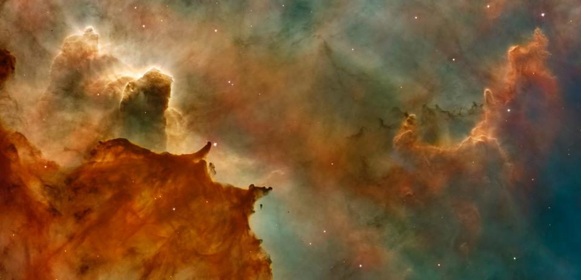
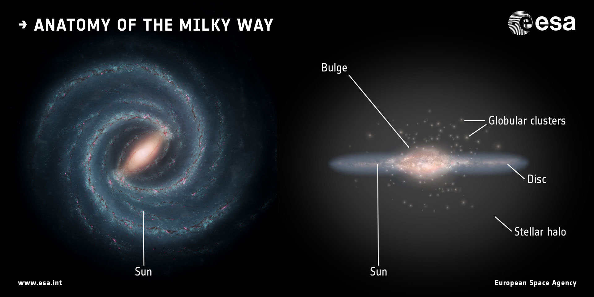

About Me

Education:
-
BS in Physics from Texas Tech University
-
MS in Physics from the University of Pittsburgh
-
PhD in Physics from the University of Pittsburgh ETA 2021
I am a graduate student afiliated with the University of Pittsburgh, department of
Physics and Astronomy.
I’m interested in studying the evolution of galaxies and the dark matter haloes in which they reside, particularly
at the mass range of the Milky Way. While the Milky Way offers a unique perspective to study nuanced details of galaxy formation,
we still have a very limited ability to compare the Milky Way to other galaxies. My
research aims to close this gap.
I participate heavily in the SDSS-IV Milky Way as a Galaxy group.
I am passionate about inclusion and equity both in an out of academia. I am a member of the
Women and Minorities in Physics
group, and serve as a mentor to younger students through the mentorship program.
Please check out my publications here:
List of both first author and co-author papers.
ORCID
Research
My research focuses on the intersection of interpreting theoretical frameworks that originate from dark matter
simulations and improved observational constraints, particularly in the mass range of the Milky Way. My experience
with this diverse set of observed and simulated datasets illuminates the discrepancies in existing models which
places me in a unique position with which I can bridge the gap between observational constrains and simulations
predictions. Specifically, I aim to prune simulation datasets for a more accurate representation of our Galaxy and
to utilize the observation data at our disposal to constrain the physical processes of galaxy formation.
Below I outline my research interests and relevant papers.
An artist interpretation of the Milky Way. While we may never know exactly what it looks like, my research focuses on improving this image.
Dark Substructure of the Milky Way:
to explore subhalo abundances in Milky Way-like dark matter haloes, and understand subhalo abundance
correlations with host halo properties.
Published in Monthly Notices of the Royal Astronomical Society April 2019.
Dark matter halo structure/substrucure: to explore how dark matter subhstructure effects their host
halo structure, and to provide a better model for inferences of dark matter halo observationspredictions.
Accepted for publication in Monthly Notices of the Royal Astronomical Society Fall 2020.
Milky Way analog galaxies: to determine how the Milky Way compares to the general galaxy population,
and to constrain photometric properties of the Milky Way that cannot be observed directly.
First author paper to be submitted Winter 2020.
Second author papers.
Machine learning using Gaussian process regressions: to construct robuts models that allow us to both better constrain the
evolutionary history of the Milky Way and connect dark matter halo simulation predictions with observations.
Data and Tools
Milky Way Analog Selection:
Github repository for selecting Milky Way analogs
This code is designed for efficient selection and analysis of Milky Way analogs. Analogs
are selected by random draws from the fiducial Milky Way PDF in the parameter space of interest.
More than three parameters are discouraged due to small numbers of analogs. For each set of random
draws the nearest neighbors are found in a binary tree. Then the sample's photometric properties,
derivatives of the photometric properties, and the errors + Eddington bias are calculated.
This code is useful for anyone interested in selecticting Milky Way, Andromeda, etc. analog galaxies.
Useful Catalogs:
Links to catalogs with which to study Milky Way analogs will be included shortly.
Contact
Email:
cef41@pitt.edu Send mail.
fielder.catherine@gmail.com Send mail.
Address:
Allen 300 No. 12
3941 O'Hara St,
Pittsburgh, PA 15213
USA
Outreach
I personally believe that teaching and outreach are important components of being a scientist.
Through these avenues we can improve education and equity.
Listed below are activites that I have been involved in at respective universities.
University of Pittsburgh
- Speaker, Astronomy on Tap Pittsburgh, Fall 2018
- Guest Lecturer, Speaking about science and research to multiple high school classes, Fall 2019, Spring 2020
- Guest Lecturer, Introducing research to undergraduates, Society of Physics Students meeting Fall 2020
- Teaching assistant and Teaching Fellow, Introductory astronomy classes Basics of Space Flight and Stonehenge to Hubble, Fall 2014, Spring 2015, Spring 2018, Fall 2018
Texas Tech University
- President of the Society of Physics Students 2013, 2014
- Organizer of many public events such as bi-annual star parties, scientific trips, science demonstrations.
- Science fair judge for local schools, Spring 2013, Spring 2013, Spring 2014